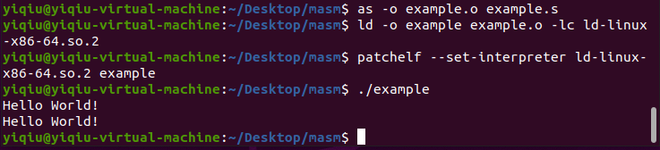

前言
以前看ida的时候经常遇到这些指令，但是老是记不住，每次遇到了才去查，查了又忘
最近一段时间在系统地学习汇编，搞好学到这里，就写一篇blog巩固一下，以后也方便查
前三条指令本质上就是数据的转移指令，和mov是大同小异的，而最后一条rep是循环指令，可以联想英文单词repeat
movs
movs又包含三条指令，movsb、movsw、movsd
后缀b、w、d分别指byte， word，dword，即字节、字、双字，指明了操作的单位
首先我们来看一下mov指令的格式：
mov 目的操作数，源操作数（intel格式）
mov指令会给出目的操作数和源操作数，指令的大概意思就是把源操作数移动到目的操作数
但是movs不一样，movs不需要接目的操作数和源操作数，指令的格式是：
movsb
movsw
movsd
这样写的原因是movs的目的操作数和源操作数是隐式给出的，目的操作数存放在edi中，源操作数存放在esi中
所以说，movsb相当于mov [edi], byte ptr [esi]
movsw，movsd以此类推
每次执行movs指令，edi与esi都会发生相应的变化，要么变大要么变小，变大还是变小取决于DF标志位的值，0则变大，1则变小，变大或者变小的数值取决于源操作数的大小
lods
movs是把一个内存空间的内容复制到另一片内存空间，而lods则是将内存空间的值复制到寄存器中
lodsb
这条指令表示将esi中的内容复制到eax中，复制的单位是字节
lodsw、lodsd以此类推
每次执行都会增加或减少esi的值，参照movs
stos
stos与lods指令的行为相反，stosb代表吧eax的一个字节存到edi所指向的内存空间中去
每次执行都会增加或减少edi的值，参照movs
于是我们发现：movsb 等价于lodsb stosb
rep
rep指令的格式是：
rep 指令a
rep会重复执行指令a，每次执行前是ecx的值减一，如果减去一以后ecx的值为0，则结束循环
1 | mov $54, %ecx |
这条指令会重复执行54次
实例
综合上面四条指令，我们可以写一个汇编程序来实现字符串的复制
1 | .extern printf |
